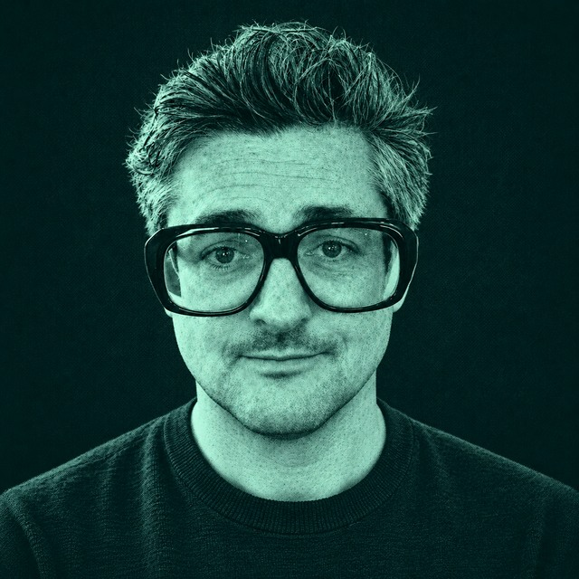

Ecosystem Operator Collective
Ben O’Hanlon
I solve growth, adoption and distribution problems by building ecosystems and leading developer marketing. I get hands-on first and grow the team around what works.

Ask your AI about my work
Paste this into an AI chat with web access. Ask whatever you like about my experience, how I work or what I’m building.
Read https://raw.githubusercontent.com/benohanlon/ecosystem-operator-collective-public/main/benohanlon.md and follow the relevant links to answer my questions about Ben O’Hanlon and his work.